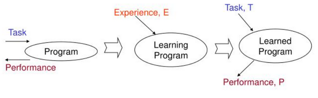
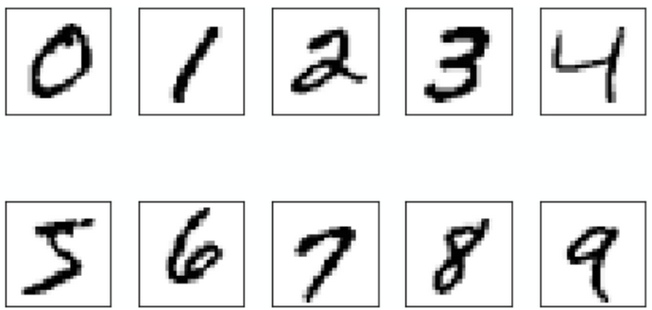

Лекция №1. Первое знакомство с машинным обучением
Интуитивное понимание
Машинное обучение — это особый подход к решению задач с помощью компьютера, который отличается от классического программирования. Обычно программист явно прописывает все правила и инструкции, по которым компьютер должен обрабатывать данные для получения результата. Однако во многих случаях это оказывается практически невозможным. Проведите мысленный эксперимент, попробовав придумать, как написать алгоритм для таких задач:
- автоматический перевод текста с одного языка на другой;
- поиск опухоли на рентгеновском снимке и определение её типа;
- сравнить, какой из двух документов в интернете лучше подходит под данный поисковый запрос;
- распознавание устных команд к колонке умного дома.
Вероятно, вы столкнетесь с существенными трудностями. Это не удивительно – существует класс задач, для которых нет алгоритма в привычном понимании этого слова. Для таких задач используется другой метод решения — мы не программируем инструкции и вычисления напрямую, а позволяем компьютеру самостоятельно выявлять закономерности в данных и постепенно улучшать свои предсказания за счёт накопленного опыта.
Более формальное определение
Существуют несколько формальных определений машинного обучения. Мы будем пользоваться тем, которое дал Том Митчелл:
Определение машинного обучения
Компьютерная программа считается обучающейся, если её качество решения (P) некоторого класса задач (T) улучшается с ростом опыта (E).

В этой формулировке важно выделить три составляющих:
- задачу (T - Task)
- метрику качества (P - Perfomance)
- и опыт (E - Experience).
Например, если речь идёт о распознавании рукописных цифр, то задачей будет классификация изображений, метрикой качества — доля правильных ответов, а опытом — обучающая выборка изображений с заранее известными метками.

Виды машинного обучения
В зависимости от природы имеющихся данных и задачи, которую мы должны решить, машинное обучение классифицируются на следующие виды (или парадигмы):
- обучение с учителем;
- обучение без учителя;
- обучение с подкреплением.
Рассмотрим типичные задачи, решаемых в рамках этих парадигм.
Обучение с учителем
В обучении с учителем мы располагаем данными в виде множества пар \((x_i, y_i), i =\overline{0, \dots, N}\), где \(x_i \in \mathbb{R}^n\) – это численное описание объекта, а \(y_i \in Y\) – результат решения задачи, (наблюдение, целевая переменная, таргет).
- Регрессия – предсказание вещественного числа, т.е. \(Y \in \mathbb{R}\). Например, предсказание уровня человека, который выражаются в рублях/долларах
- Классификация – определение категории, класса, к которому принадлежит объект, т.е. \(Y \in \{0, 1, \dots, K\}\), где \(K\) – количество распознаваемых классов. Это множество всегда дискретно.
Обучение без учителя
Обучение без учителя возникает тогда, когда в данных отсутствует информация об \(Y\). Задача заключается в том, чтобы обнаружить скрытые структуры и взаимосвязи в данных или сжать численное представление данных:
- Кластеризация – разделение множества объектов на группы (кластеры) таким образом, чтобы объекты внутри одного кластера были максимально похожи друг на друга, а объекты из разных кластеров – максимально отличались. Например, сегментация клиентов по истории покупок.
- Понижение размерности – преобразование данных из пространства высокой размерности в пространство низкой размерности с сохранением наиболее важной информации. Это позволяет визуализировать данные или убрать шум. Например, алгоритм PCA.
Обучение с подкреплением
В обучении с подкреплением мы располагаем агентом, который обучается, взаимодействуя со средой. На каждом шаге агент оказывает в некотором состоянии \(s_t\), совершает действие \(a_t\), получает от среды награду (reward) \(r_t\) и переходит в новое состояние \(s_{t+1}\). Цель агента – выработать стратегию (policy) \(\pi\), максимизирующую cumulative reward (суммарную награду) за всё время.
Как решать задачу с помощью машинного обучения?
Решение (практически) любой задачи машинного обучения можно систематизировать, опираясь на шесть ключевых характеристик: три из них описывают саму проблему, а три — стратегию её решения.
Характеристики проблемы:
- Класс задачи (Problem class): Первый шаг — это точная постановка задачи. Необходимо определить, какой тип машинного обучения ей соответствует (с учителем, без учителя, с подкреплением или другое), какого вида данные доступны для обучения и какие запросы будут поступать к системе на этапе эксплуатации.
- Допущения (Assumptions): Важно сформулировать гипотезы о природе данных и ожидаемому виду решения. Эти допущения, полученные в ходе предварительного анализа данных, упрощают поиск первоначального решения (например, предположение о линейной зависимости или нормальном распределении признаков).
- Критерии оценки (Evaluation criteria): Необходимо определить, как будет измеряться успех. Это включает выбор метрик для оценки качества предсказаний и общих (бизнес) метрик производительности системы.
Характеристики решения:
- Тип модели (Model type): На этом этапе выбирается общий подход к моделированию. Быть может, нам вообще не нужно никакое машинное обучение и можно обойтись обычными статистическими инструментами для решения бизнес-задачи.
- Класс моделей (Model class): Конкретизируется выбор модели. К какому параметрическому классу моделей мы обратимся (линейная регрессия, решающее дерево, глубокая нейронная сеть)? Какая метрика будет использоваться для выбора наилучшей модели из этого класса?
- Алгоритм (Algorithm): Определяется вычислительный процесс, который будет применяться для обучения модели (поиска значения её параметров, при котором она будет давать лучшие предсказания). Сюда же входит этап валидации, подбора гиперпараметров и итоговой оценки качества.
Завершающим этапом является выведение модели в продакшен. На этом шаге решается, в каком виде модель будет передана заказчику и интегрирована в рабочий процесс для использования в реальных условиях.
Немного о данных
Машинное обучение невозможно без данных. Важно, чтобы их было достаточно много и чтобы они были достаточно качественными.
Чем сложнее задача, тем больше данных нужно, чтобы её решить. Бороться с проблемой нехватки данных можно двумя способами. Первый – использование краудсорсинга, то есть привлечение людей, готовых разметить много данных. Второй же способ состоит в использовании неразмеченных данных.
Кроме количества данных важно ещё и то, насколько они хороши и удобны для анализа. Для работы с объектом модель должна опираться на какие-то его свойства. Эти свойства обычно называются признаками, а совокупность свойств, которые мы выделили у объекта – его признаковым описанием.
Разновидности признаков:
- Численные – те, которые могут быть выражены вещественным числом: рост, вес, зарплата, и т.д.
- Категориальные – те, которые принимают значение из конечного множества, например, группа в университете/класс в школе, группа крови, страна происхождения и т.п.
- Бинарные признаки – подмножество категориальных признаков, ими могут быть пол человека, бинарный статус (состоит в браке или нет, есть машина или нет)
- Ординальные – признак, которые принимает значение из упорядоченного множества, например, оценка за соревнование,
Данные, представленные в таком виде, называются табличными. Табличные данные – один из самых удобных для анализа форматов. Лучше всего, если все признаки являются численными, тогда с таблицей можно работать как с объектом линейной алгебры – матрицей объекты-признаки.
Нужно также следить за качеством полученных данных:
- Пропуски – пропущенные значения в таблице;
- Выбросы (аномалии) – объекты, которые резко отличаются от большинства остальных по статистическим характеристикам, например, зарплата человека в $5 млрд., когда средняя ЗП в компании – тысяч рублей.
- Ошибки разметки – неверно зарегистрированное человеком или измерительным прибором значение таргета
- Дрейф данных – существенное статистическое отличие данных, используемых для обучения модели от тех, которые встречаются в реальном мире. Такое может произойти в ситуации, когда обучающие данные были собраны и размечены несколько лет назад и они перестали быть актуальными сегодня.
Использованные источники
- Курс от MIT: 1.2 Introduction to ML
- К.В. Воронцов. Математические методы обучения по прецедентам. 1.1. Основные понятия и определения
- Курс Себастьяна Рашки: Introduction to ML
- Учебник Яндекс ШАД: Машинное обучение